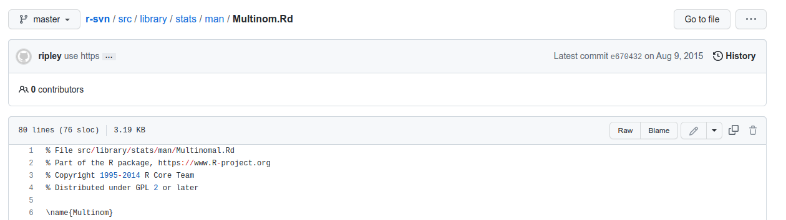
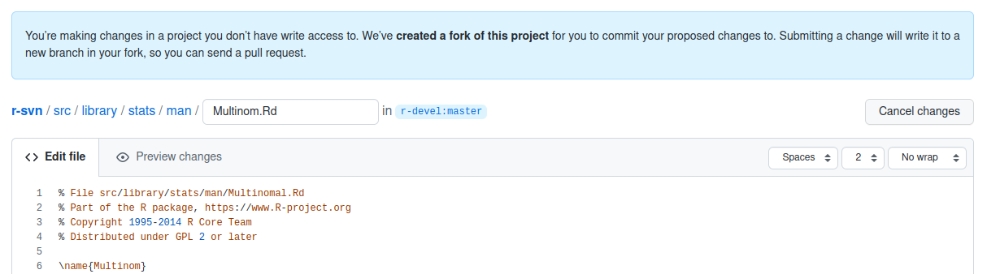
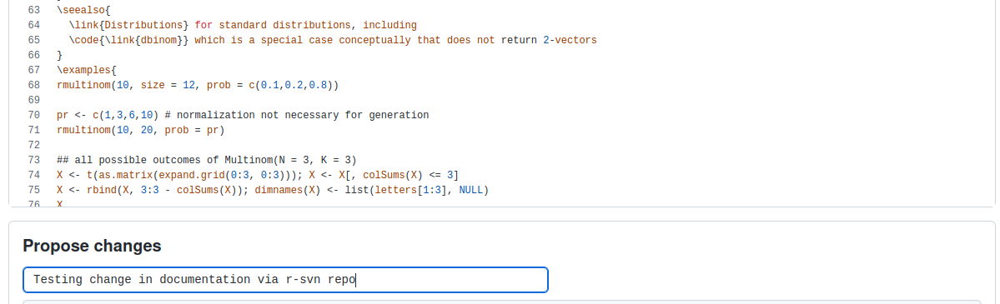
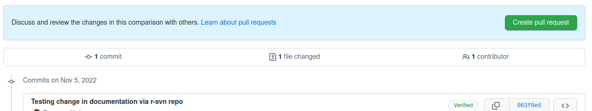
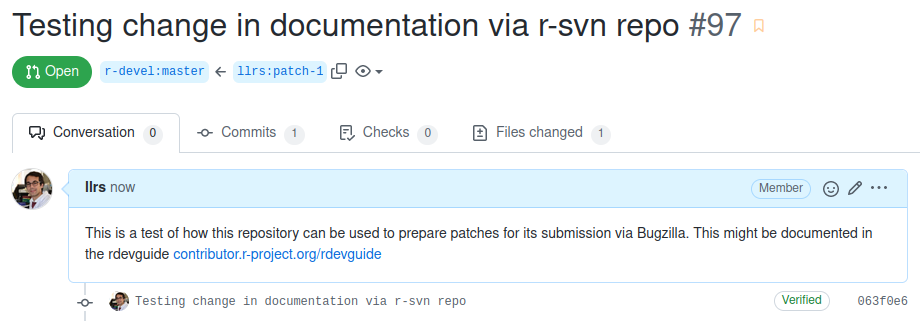
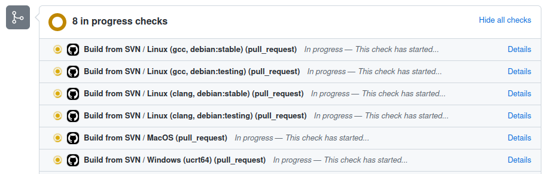
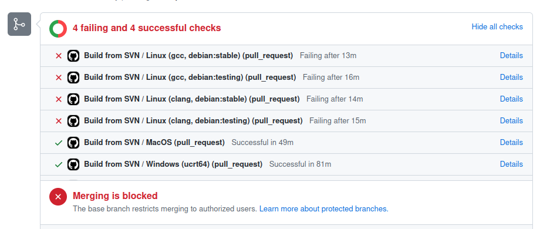

8 Lifecycle of a Patch
8.1 Introduction
R uses a workflow based on patches. A patch is the set of differences (additions and deletions) between two versions of code. So you can create a patch defining a bug fix or a proposed update to the R codebase and submit it through your official Bugzilla account to the core developer(s). Be clear in your communication as it is the key to contributing to any project, especially an open source project like R.
8.2 When do you submit a patch?
There might be a situation where you come across a bug in R, which you may have an idea of how to fix. This can turn out to be an opportunity for you to submit a patch. By submitting a patch or a bug fix, you are helping to reduce the workload on the R developers in addition to yourself being a contributor to R!
When you submit a patch, you are helping the developer(s) and maintainer(s) so that they do not have to write the entire code from scratch. Instead, they can test and tweak your patch, if necessary.
8.3 What tools are required to submit a patch?
To submit a patch, you need:
SVN installed on your machine.
The latest developer version of R.
You can retrieve the latest source code of R via:
export TOP_SRCDIR="$HOME/Downloads/R"
svn checkout https://svn.r-project.org/R/trunk/ "$TOP_SRCDIR"Depending on the operative system you might need to do some steps before that. The different steps required can be found in previous chapters of the book, for Windows, macOS and Linux.
8.4 How to prepare a patch?
If you have the source code in $TOP_SRCDIR you can edit the files, for example a documentation file such as "$TOP_SRCDIR"/src/library/stats/man/Multinom.Rd, to make your desired changes to that or more files.
Then you should check that R still works as expected via:
cd "$TOP_SRCDIR"
make check-develIf there is no test for your proposed change you can add a new regression test, following the guidelines.
Then you should bring changes from the repository into the working copy, in case any other change has been introduced, and create a patch.diff file with just the changes you want to propose to the R core:
svn update
svn diff > patch.diffMost often, changes are made to existing files, but if you happen to be adding a new file in your change, you’ll need to run svn add path/to/file1 ... before running svn diff to mark those files for inclusion.
This patch.diff file is the one that can be proposed to the R core via Bugzilla. You can also ask for reviews to the patch before proposing it to the R core via the r-devel mailing list or the slack channel of the R-contributors space.
8.4.1 Using a git mirror
Besides checking in your computer, you can use the Github mirror r-devel/r-svn of the source code to check this patch with different configurations and OS.
You should first find the file to edit, via the github interface for example:

Then you can edit it, directly in the interface or using the github interface:

Create a commit with a message describing the changes

And create a pull request from the branch created to check the changes.

Add a message and description of the svn for other users and the R core to know what is the purpose of this modification:


Once the PR is submitted, some automatic checks will be triggered (they might need to be approved by some other users as per Github rules):
 When the checks end you will need to explore the results and asses if the results indicate a problem or not.

Once you are happy with the changes and the checks report that everything is okay you can retrieve the patch via:
https://patch-diff.githubusercontent.com/raw/r-devel/r-svn/pull/<pull_request_number>.diff
Save <pull_request_number>.diff as a plain text file to submit your patch, remember to check if it meets the recommendations for good patches.
If you want to use git from the terminal to create the pull request (PR) to test the changes, you can use this summary of the available git commands.
8.5 Making good patches
When creating a patch for submission, there are several things that you can do to help ensure that your patch is accepted:
Make sure to follow R’s coding standards (R is a GNU project and there are GNU coding standards). The coding style of the patch you submit should largely match with the codebase it is being applied to. If your patch has one or two minor discrepancies, then those may be fixed by the core developer who will eventually test your patch. However, if there are systematic deviations from the style guides your patch will be put on hold until you fix the formatting issues. There is no comprehensive official R style manual, however some nearly universal standards are summarised in this article.
Be aware of backwards-compatibility considerations. While the core developer who eventually handles your patch will make the final call on whether something is acceptable, thinking about backwards-compatibility early will help prevent having your patch rejected on these grounds. Put yourself in the shoes of someone whose code will be broken by the change(s) introduced by the patch. It is quite likely that any change made will break someone’s code, so you need to have a good reason to make a change as you will be forcing someone to update their code. This obviously does not apply to new functions or new arguments. New arguments should be optional and have default values which maintain the existing behaviour. If in doubt, discuss the issue with experienced developers.
Make sure you have proper tests to verify that your patch works as expected. Patches may not be accepted without the proper tests.
Make sure the entire test suite runs without failure because of your changes. It is not sufficient to only run whichever test seems impacted by your changes, because there might be interactions unknown to you between your changes and some other part of the interpreter.
Proper documentation additions/changes should be included.
Each bugfix should ideally be addressed by a single patch. In particular, do not fix more than one issue in the same patch (except, if one code change fixes all of them) and do not do cosmetic changes to unrelated code in the same patch as some bugfix.
8.6 Submitting your patch for review
8.6.1 Patch in response to a pre-existing issue or bug report
In this case, you should attach the patch to the existing issue or bug report on Bugzilla with a brief comment.
Use the Attachments option to add the
*.difffile as attachment.On the new Create New Attachment web page, add a Brief Decription.
Select Content Type as
patch.Add comments (often prose text) in this page rather than in the original bugzilla page for the PR.
Press Submit. This will give you a bugzilla submission that sends one e-mail to all of R-core plus the PR author.
8.6.2 Patch in response to an unreported issue or bug report
Assuming you already performed a search on Bugzilla for a pre-existing issue or bug and did not find the issue or bug reported, you need to create a new bug report and include your patch with it. Please fill in as much relevant detail as possible to prevent reviewers from having to delay reviewing your patch because of lack of information. Include (mostly as the first sentence), a to-the-point explanation of what the purpose of the patch is. This sentence should not be in the descriptive form, rather an imperative form will be more suitable here. If this is not enough detail for a patch, a new paragraphs(s) can be added to explain in proper depth what has happened. The details should be good enough that a core developer reading it understands the justification for the change.
8.7 Getting your patch reviewed
To begin with, please be patient. There are many more people submitting patches than there are people capable of reviewing your patches. Getting your patch reviewed requires a reviewer to have the spare time and motivation to look at your patch. We cannot force anyone to review patches and no one is employed to look at patches.
There is a #patches-for-review channel on the R Contributors slack where you can share your patch(es) for review/feedback before submitting to R-Core/Bugzilla. This can help with checking that you have included the important information and excluded redundant information.
If your patch has not received any notice from reviewers (i.e., no comment made) after one month, comment/message on the #patches-for-review channel to remind the members that the patch needs a review.
When someone does manage to find the time to look at your patch they will most likely make comments about how it can be improved. It is then expected that you update your patch to address these comments, and the review process will thus iterate until a satisfactory solution has emerged.
8.7.1 How to review a patch?
One of the bottlenecks in the R development process is the lack of code reviews. If you browse Bugzilla, you will see that numerous issues have a fix, but cannot be merged into the main source code repository, because no one has reviewed the proposed solution. Reviewing a patch can be just as informative as providing a patch and it will allow you to give constructive comments on another developer’s work. This guide provides a checklist for submitting a patch review. It is a common misconception that in order to be useful, a patch review has to be perfect. This is not the case at all. It is helpful to just test the patch and/or play around with the code and leave comments in the patch or on Bugzilla.
If a bug report or an issue has a patch attached that has not been reviewed, you can help by making sure that the patch:
follows the style guides;
is a good solution to the problem it is trying to solve;
includes proper tests; and
includes proper documentation changes.
Also refer to Making good patches for more ideas. Doing all of this allows the core developer(s) and/ or maintainer(s) to more quickly look for subtle issues that only people with extensive experience working on R’s codebase will notice.
8.8 Leaving a patch review on Bugzilla
When you review a patch, you should provide additional details and context of your review process and leave comments. For example:
If you tested the patch, report the result and the system and version tested on, such as ‘Windows 10’, ‘Ubuntu 16.4’, or ‘Mac High Sierra’.
If you request changes, try to suggest how or attach an updated patch.
Comment on what is ‘good’ about the patch, not just the ‘bad’. Doing so will make it easier for the patch author to find the good in your comments.
8.9 Dismissing review from another core developer
A core developer can dismiss another core developer’s review if they confirmed that the requested changes have been made. When a core developer has assigned the patch to themselves, then it is a sign that they are actively looking after the patch, and their review should not be dismissed.
8.10 Acceptance or rejection of your patch
Once your patch has reached an acceptable state, it will either be applied or rejected. If it is rejected, please do not take it personally. Your work is still appreciated regardless of whether your patch is applied. Balancing what does and does not go into R is tricky and everyone’s contributions cannot always be accepted.
But if your patch is accepted and applied it will then go on to be released with the next patched release and eventually the next major release of R. It may also be backported to older versions of R as a bugfix if the core developer doing the patch acceptance believes it is warranted.
It may take longer before your patch is accepted and applied or rejected, sometimes even months or years. Nonetheless, it is appreciated that you submitted a patch.